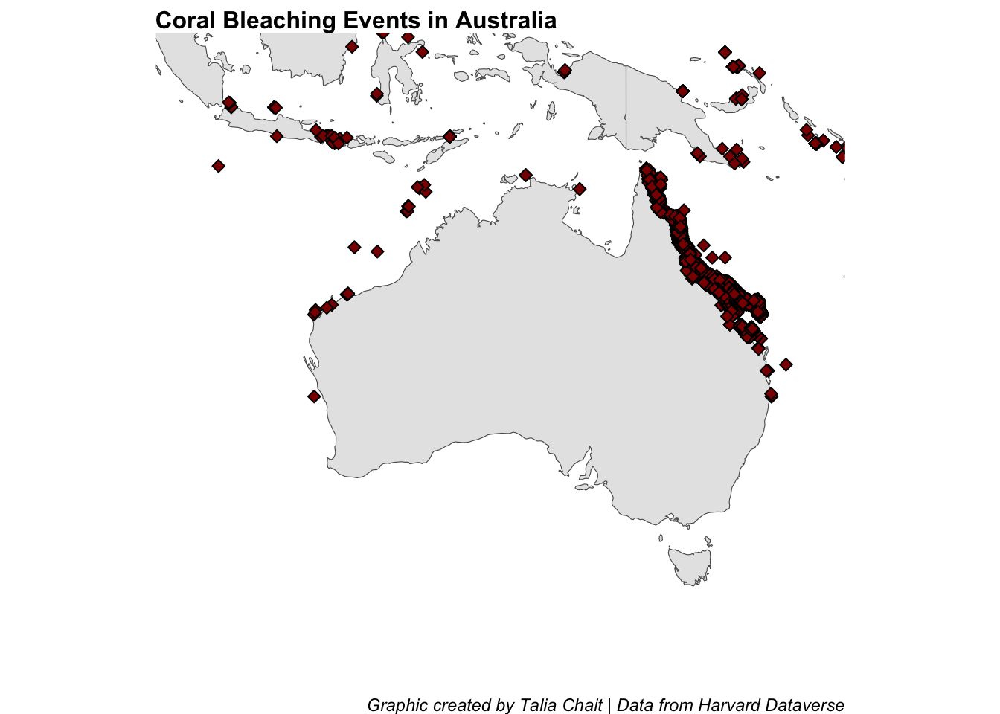
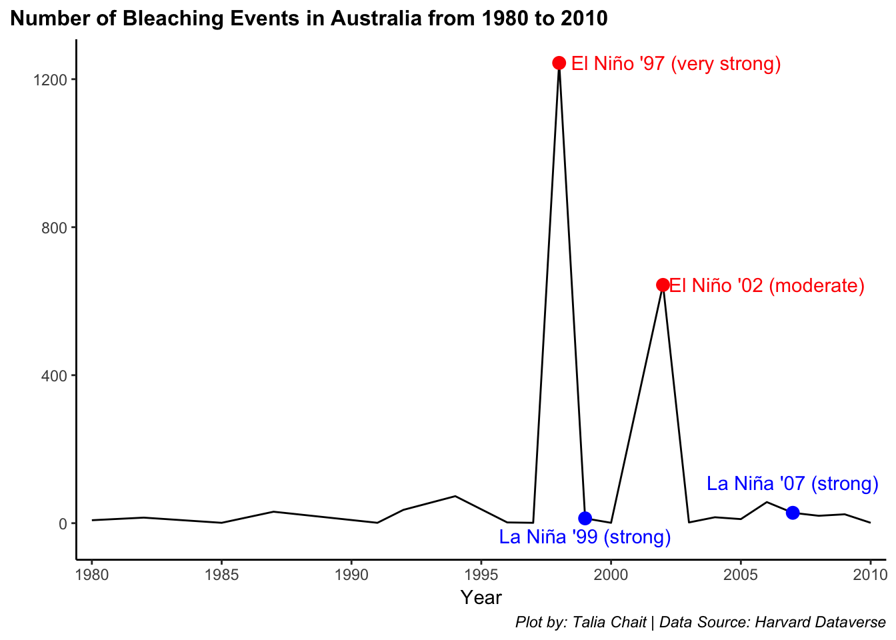
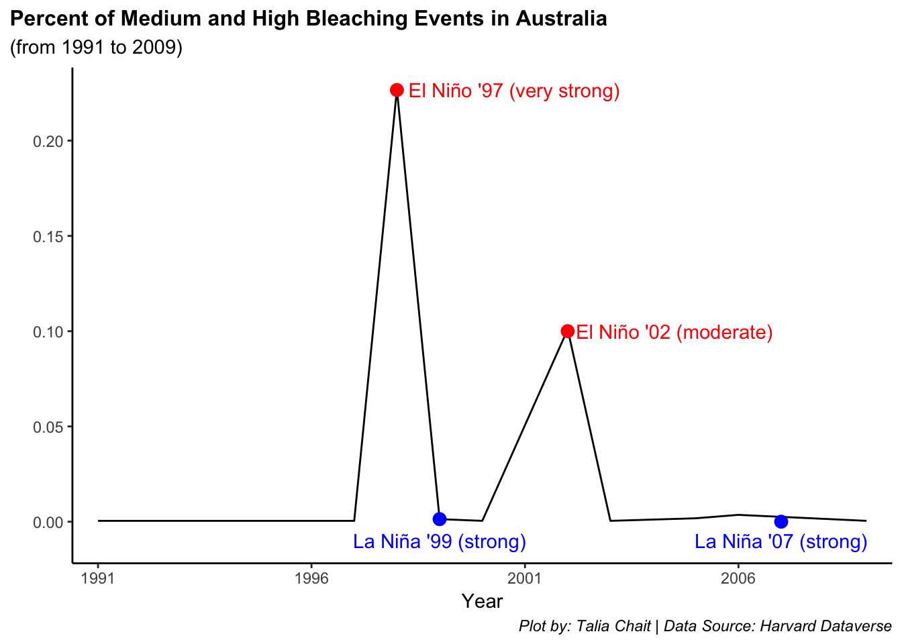

Coral Bleaching is the act of corals losing their vibrant colors and turning white through being stressed. The leading cause of coral bleaching is climate change. This includes an increase in ocean temperature, overexposure to sunlight, or harmful nutrients from runoff or pollution. Any of these conditions could cause the coral to expel the symbiotic algae living in their tissues which in turn causes the corals to turn completely white - hence the bleaching term.
Image Caption: A coral reef that is healthy (on the left) versus a coral reef that is bleached (on the right) - source: Greenspace
Why is it important?
It is important to remember that while corals are not necessarily “dead” from a coral bleaching event, it is still crucial to make sure they survive the bleaching events. Corals provide resources to many species that call the ocean their homes. By understanding the patterns in coral bleaching and bleaching severity, we can evaluate ocean health and understand what we can do to prevent more coral reefs from being bleached and ultimately prevent more damage to our oceans.
Data, Visualizations, and Results
Data was obtained from Harvard Dataverse (link to data) which is a free data repository that is open to all researchers from any discipline (both inside and outside of Harvard University). It allows researchers to share, archive, cite, and access different data-sets. It was published to the repository in 2016 but has data from the mid 1800s.
Since this data-set is on corals, the ethical issues have to do with gathering information from marine life and and how much the data collection could cause harms. While the harms are minor, the benefits of this data being collected goes well beyond the health of the corals. This is because coral bleaching is an indicator of climate change so collecting data on the health of corals could have lasting impacts on reducing global warming.
Code
coralcountperregion %>%filter(REGION =="Australia") %>%ggplot(aes(x = YEAR, y = n)) +geom_line() +theme_classic() +scale_x_discrete(limits =c(1980, 1985, 1990, 1995, 2000, 2005, 2010)) +annotate("point", x =1998, y=1244, size =3, color ="red") +annotate("text", x =2002.5, y =1244, label ="El Niño '97 (very strong)", color ="red") +annotate("point", x =2002, y=644, size =3, color ="red") +annotate("text", x =2006, y =644, label ="El Niño '02 (moderate)", color ="red") +annotate("point", x =2007, y=28, size =3, color ="blue") +annotate("text", x =2007, y =110, label ="La Niña '07 (strong)", color ="blue") +annotate("point", x =1999, y=13, size =3, color ="blue") +annotate("text", x =1999, y =-35, label ="La Niña '99 (strong)", color ="blue") +labs(x ="Year",y ="",title ="Number of Bleaching Events in Australia from 1980 to 2010",caption ="Plot by: Talia Chait Data Source: Harvard Dataverse",color =NULL) +theme(legend.position ="none",plot.title =element_text(family ="mono", face ="bold", size =12, ),plot.title.position ="plot",plot.caption =element_text(family ="mono"),plot.subtitle =element_text(family ="mono"),axis.title.y =element_text(family ="mono"),axis.title.x =element_text(family ="mono", vjust =0.5))

el nino events impact australia more than la nina events…el nino generally brings warmer ocean temperatures while la nina brings the opposite. Therefore, la nina events tend to prevent mass coral bleaching events (according to great barrier reef foundation). As we see on the graph, the two spikes in the number of bleaching events are directly correlated with the el nino very strong year in 1997 and the moderate year in 2002. for example, el nino very strong in 1997 brought 1244 bleaching events while the la nina strong in 1999 brough 13 bleaching events (significant difference) - makes sense with difference between effects of el nino and la nina
Code
coralcountperregionbleach %>%filter(REGION =="Australia", BLEACHING_SEVERITY %in%c("HIGH", "Medium")) %>%group_by(YEAR) %>%mutate(sumperyear =sum(n)) %>%summarize(REGION, YEAR, sumperyear) %>%unique() %>%mutate(percentMedHigh = sumperyear/2229) %>%ggplot(aes(x = YEAR, y = percentMedHigh)) +geom_line() +theme_classic() +scale_x_discrete(limits =c(1991, 1996, 2001, 2006)) +annotate("point", x =1998, y=0.2265589951 , size =3, color ="red") +annotate("text", x =2000.75, y =0.2265589951 , label ="El Niño '97 (very strong)", color ="red") +annotate("point", x =2002, y=0.10, size =3, color ="red") +annotate("text", x =2004.5, y =0.10, label ="El Niño '02 (moderate)", color ="red") +annotate("point", x =2007, y=0, size =3, color ="blue") +annotate("text", x =2007, y =-0.01, label ="La Niña '07 (strong)", color ="blue") +annotate("point", x =1999, y=0.0013458950, size =3, color ="blue") +annotate("text", x =1999, y =-0.01, label ="La Niña '99 (strong)", color ="blue") +labs(x ="Year",y ="",title ="Percent of Medium and High Bleaching Events in Australia",subtitle ="(from 1991 to 2009)",caption ="Plot by: Talia Chait | Data Source: Harvard Dataverse",color =NULL) +theme(legend.position ="none",plot.title =element_text(family ="mono", face ="bold", size =12, ),plot.title.position ="plot",plot.caption =element_text(family ="mono"),plot.subtitle =element_text(family ="mono"),axis.title.y =element_text(family ="mono"),axis.title.x =element_text(family ="mono", vjust =0.5))
`summarise()` has grouped output by 'YEAR'. You can override using the
`.groups` argument.

Australia Spatial Viz
Code
ggplot(data = world) +geom_sf() +geom_point(data = coralbleaching, aes(x = LON, y = LAT), size =2, shape =23, fill ="darkred") +coord_sf(xlim =c(-160, 160), ylim =c(-90, 90), expand =FALSE) +theme(plot.title =element_text(family ="mono", face ="bold", size =12, ),plot.title.position ="plot",plot.caption =element_text(family ="mono"),plot.subtitle =element_text(family ="mono"),axis.title.y =element_text(family ="mono"),axis.title.x =element_text(family ="mono", vjust =0.5)) +theme_classic() +labs(title ="Coral Bleaching Events Around the World",y ="Latitude",x ="Longitude",caption ="Plot created by Talia Chait | Data from Harvard Dataverse")

Code
ggplot(data = world) +geom_sf() +geom_point(data = coralbleaching, aes(x = LON, y = LAT), size =2, shape =23, fill ="darkred") +coord_sf(xlim =c(100, 160), ylim =c(-50, 0), expand =FALSE) +theme(plot.title =element_text(family ="mono", face ="bold", size =12, ),plot.title.position ="plot",plot.caption =element_text(family ="mono"),plot.subtitle =element_text(family ="mono"),axis.title.y =element_text(family ="mono"),axis.title.x =element_text(family ="mono", vjust =0.5)) +theme_classic() +labs(title ="Coral Bleaching Events in Australia",y ="Latitude",x ="Longitude",caption ="Plot created by Talia Chait | Data from Harvard Dataverse")
Code
ggplot(data = world) +geom_sf() +geom_point(data = coralbleaching, aes(x = LON, y = LAT, fill = BLEACHING_SEVERITY), size =2, shape =23) +coord_sf(xlim =c(140, 160), ylim =c(-30, -10), expand =FALSE) +theme(plot.title =element_text(family ="mono", face ="bold", size =12, ),plot.title.position ="plot",plot.caption =element_text(family ="mono"),plot.subtitle =element_text(family ="mono"),axis.title.y =element_text(family ="mono"),axis.title.x =element_text(family ="mono", vjust =0.5)) +theme_classic() +labs(title ="Coral Bleaching Events in Australia (near Great Barrier Reef)",y ="Latitude",x ="Longitude",caption ="Plot created by Talia Chait | Data from Harvard Dataverse")